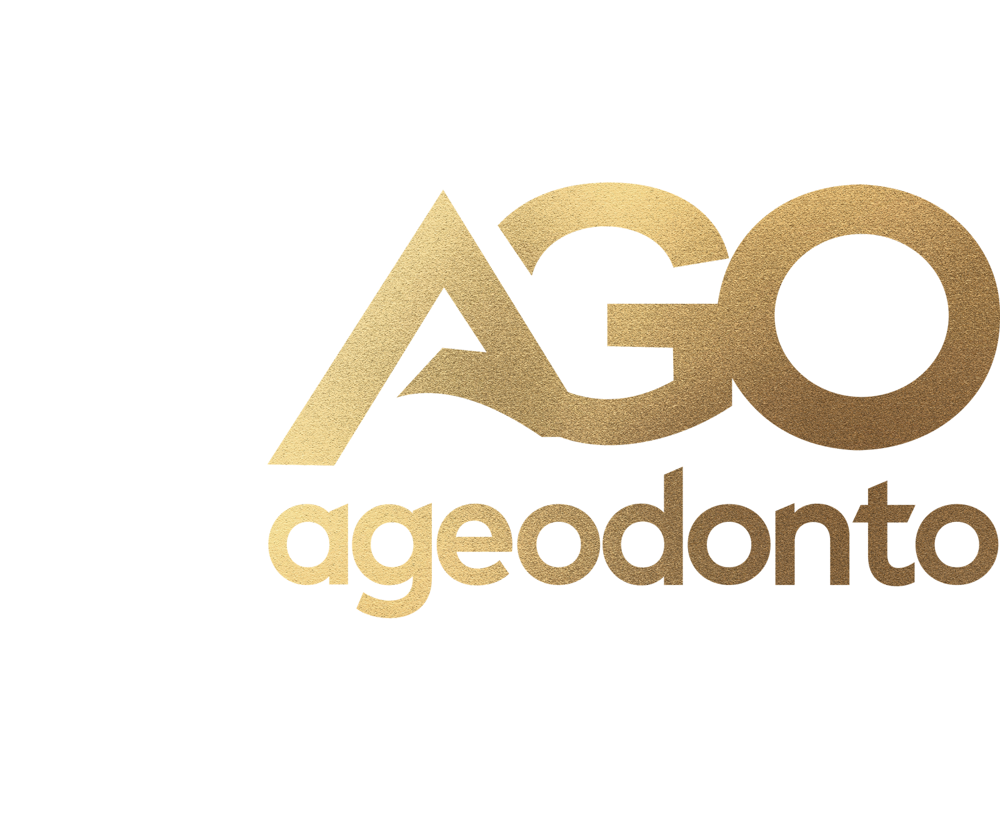

Ageodonto · Gestão de Alta Performance
Minhas Responsabilidades — Outubro 2026
Gregori Scarpeta
Extraído das atas de outubro
0%
Todas
Em aberto
Vencidas ⏰
Concluídas
As caixinhas marcadas ficam salvas só neste navegador. · Fontes:
Pautas e Atas O.U. Indaial (13/10)
·
Ata RMR Unidade (15/10)
·
Ata nº 009 AGO Latam (09/10, rev. 13/10)
. Documentos confidenciais.
Limpar marcações